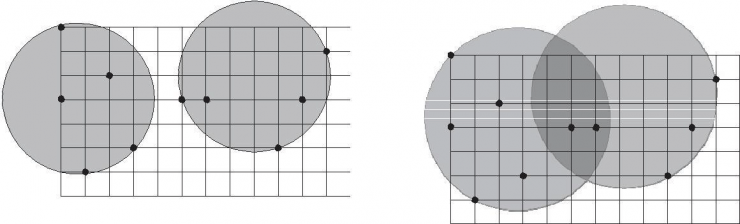

F.A.Qs
Home
Discuss
ProblemSet
Status
Ranklist
Contest
入门OJ
ModifyUser
Xeonacid
Logout
捐赠本站
Notice:
注册本OJ方式请见https://www.lydsy.com/JudgeOnline/wttl/thread.php?tid=5671
Problem 4138. -- [FJOI2015]最小覆盖双圆问题
4138: [FJOI2015]最小覆盖双圆问题
Time Limit:
10 Sec
Memory Limit:
128 MB
Submit:
181
Solved:
42
[
Submit
][
Status
][
Discuss
]
Description
给定平面上n个点(x1,y1),...,(xn,yn)，找出2个半径相同的圆R1和R2，覆盖给定的n个点，且半径最小。

设计一个算法，计算出所求最小覆盖双圆 R1 和 R2 的半径。
Input
输入有多个测试实例。每个实例的第1行中给出正整数n，n＜1000，表示平面上有n个点。
接下来的n行中每行给出2个实数(x, y)，-100000≤x≤100000，-100000≤y≤100000。
最后一行有一个0表示结束。
Output
对于每组数据，输出最小的符合题意的圆的半径，保留两位小数。
Sample Input
3
0.00 0.00
1.00 0.00
0.00 4.00
10
0.00 0.00
0.00 3.00
1.00 6.00
2.00 2.00
3.00 5.00
5.00 3.00
6.00 3.00
9.00 5.00
10.00 5.00
11.00 3.00
0
Sample Output
0.50
3.05
HINT
对于100%的数据，n<=1000，|xi|,|yi|<=100000，（T<=10）
Source
[
Submit
][
Status
][
Discuss
]
HOME
Back